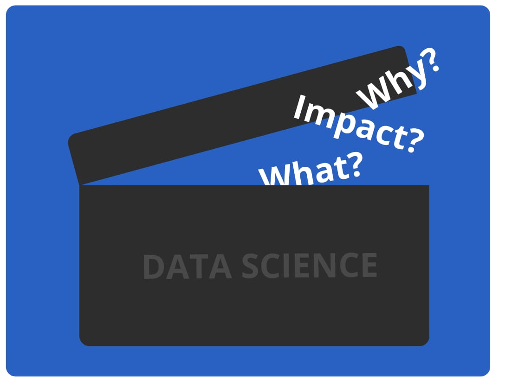
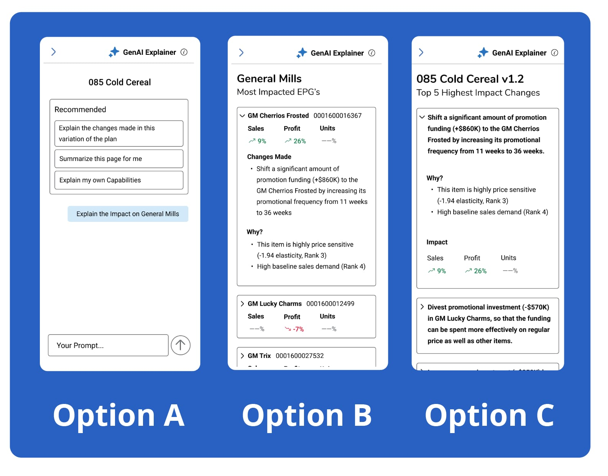

- TYPE
- UX/UI Design
- TEAM CREDIT
- Sam Allison, Pierce Gohlke, Jared Price
- DATE
- Fall 2025
Integrating GenAI into Kroger's Internal Tools
OVERVIEW
Generative AI: a solution looking for a problem. That is not to say that AI is useless, just that much of what has been asked of designers in the past years is how to integrate AI into existing systems. For this project I was tasked with doing just that for Kroger's upcoming Joint Price & Promotion tool. JP&P has a number of features, but for this project the focus was on the promotion calendar optimizer. Essentially, the tool would optimize the best time to have different promotions (ex: buy one, get one). However, user trust and understanding of the tool was low. This might just be a problem that GenAI can solve.
You have been managing Kroger's cereal promotion strategy for over 15 years. You have your own methods, your own team, and at the end of the day it's your neck on the line. Now some new software tool wants to tell you how to do your job. Would you listen?
Can we use GenAI to turn the black box transparent?
Every month data optimization science makes Kroger millions of dollars. It's not going anywhere, but is there a way that we can make the process more transparent?
Traditionally, the data science is a black box. Inputs go in, recommendations come out. However, by using GenAI and AI agents three key metrics can be surfaced to the user.
- WHAT changes the optimization is suggesting
- WHY it wants to make those changes
- IMPACT of those changes

“I'm managing a billion dollar business in Excel. It's about time we had something more modern.”
*Real quote from user research
Research Objective
While this project was beginning, Kroger as an organization was turning away from 3rd party AI tools to in-house solutions. Therefore, a central requirement of this research was not just how it would aid the JP&P tool, but how it could be applied to all tools.
Given the enormity of the ask and the limited timeframe, I decided to create three options to test. Option A is a familiar chatbot interface, while options B & C explore presenting pre-generated information to the user.

Research Methods
Tests were done 1:1 between the facilitator (myself) and the participant. A notetaker also attended, camera off and silent. All tests were done remotely.
Users were instructed to click through the prototype while being asked which they preferred, what information was most important to them, and what kinds of questions they would like to ask the chatbot.
Research Insights
INSIGHT 1
5/6
users showed excitement or neutrality towards using an AI tool
INSIGHT 2
6/6
users preferred prototypes that show pre-generated responses without needing to be prompted
INSIGHT 3
3/6
users asked to compare optimized plans to plans from last year
INSIGHT 4
5/6